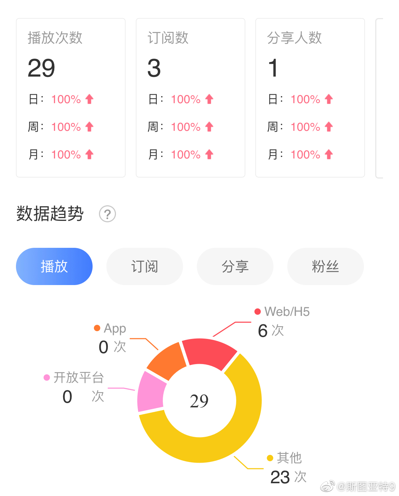

美国男篮惨败这个责任也很难拿。网上有人批评队员打得不好，说虽然最好的球员没来，但全队都是NBA啊，不是输球的借口。另一些人又说，还没退出的已经没什么好指责了，该指责的是那些退出没来的。美国男篮这感觉就好像是义务劳动去植树这感觉，能来的已经都是好样的了，树种的不好怎么好意思批评呢？当然最安全的方法，各国都一样，就是批评USA Basketball的主席。但USA Basketball又不同于其他国家篮协，不管联赛，光管国家队，他还能怎么样？
喜马拉雅这个统计系统真是让人吐槽不尽啊。数据来的慢就不说了，订阅、播放、分享人数的数字分别更新，中间相差几个小时。而且，他们这个饼图，比例失调的也太严重了。从零增长到非零，这不叫100%，这叫百分之无穷大好么，这数学真的是数学老师教的？还有，不是app, 不是web，这个其他是什么鬼？ 
昨天说的和 @CatChen 一起做的播客上传到喜马拉雅了！网页链接 这是第一期，讲一下苹果的发布会，蹭个热点。欢迎给我们提出宝贵意见。 这一期是 @CatChen 主讲，我来串场。下一期的内容也已经准备好了，我主讲， @CatChen 串场，打算讲一讲美国人怎么吃饭的问题。打算下星期搞一搞，先做个广告。